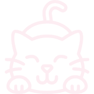
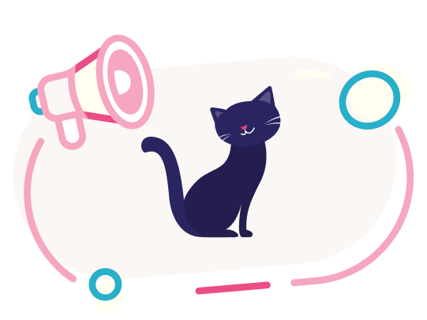

<section class="about" id="about">
    <div class="container">
        <div class="about__top">
            <h2 class="about__title title _anim-items">
                Всё о нас
            </h2>
            <div class="about__text">
                <p>
                    Ценность нашей гостиницы в том, что вы можете полностью доверить нам заботу и уход за вашим котиком!
                </p>
            </div>
        </div>
        <div class="about__bottom">
            <div class="about__text about__text_subtitle">
                <p>
                    Где и с кем оставить своего котика на время отпуска?
                </p>
                
            </div>
            <ul class="about__content">
                <li class="about__item">
                    <p>Многие из нас, планируя отпуск, или при необходимости уехать в командировку, или в период приезда
                        гостей с аллергией и по другим причинам, сталкиваются с данным вопросом.
                    </p>
                </li>
                <li class="about__item">
                    <p>В маленьких городах этот вопрос решается благодаря помощи родственников и соседей, которые
                        возьмут котика к себе или станут регулярно его навещать, чтобы покормить и уделить внимание.</p>
                </li>
                <li class="about__item">
                    <p> В большом городе данная задача решается сложнее, т.к. из-за неблизких расстояний возникают
                        неудобства ежедневно навещать Вашего котика. Данная ситуация негативно сказывается на режиме
                        кормления и длительное отсутствие внимания является стрессом для животного.</p>
                </li>
            </ul>
        </div>
        <h3 class="about__subtitle">
            Мы предлагаем
        </h3>
        <div class="about__list advantage">
            <ul class="advantage__row">
                <li class="advantage__item">
                    гостиница оснащена приточно-вытяжной вентиляцией, с регулировкой температуры в летний и зимний
                    период
                </li>
                <li class="advantage__item">
                    соблюдение санитарно-гигиенических норм
                </li>
                <li class="advantage__item">
                    круглосуточное присутствие котоняни
                </li>
                <li class="advantage__item">
                    кормление и уход (индивидуальный подход к каждому котику)
                </li>
                <li class="advantage__item">
                    индивидуальные номера
                    <span class="advantage__item-list">
                        10 номеров более 2 кв. м с окном
                    </span>
                    <span class="advantage__item-list">
                        6 номеров более 2 кв. м без окна
                    </span>
                    <span class="advantage__item-list">
                        1 номер более 3 кв.м с окнами
                    </span>
                </li>
            </ul>
            <ul class="advantage__row">
                <li class="advantage__item">
                    подготовка номера к заселению нового постояльца (обработка поверхностей дезинфицирующими средствами,
                    кварцевание)
                </li>
                <li class="advantage__item">
                    видеонаблюдение в режиме 24/7
                </li>
                <li class="advantage__item">
                    наличие холодильника для хранения влажного корма
                </li>
                <li class="advantage__item">
                    ежедневный фото/видеоотчет на мессенджеры
                </li>
            </ul>
        </div>

        <div class="about__note note">
            <div class="note__image">
                
            </div>
            <div class="note__content">
                <h4 class="note__subtitle conditions__subtitle_accend">
                    Важно!
                </h4>
                <div class="note__text">
                    <p>При необходимости медицинского наблюдения за больным котиком или после операции, для его
                        безопасности, рекомендуем выбирать гостиницу при ветеринарной клинике, т.к. гостиница для кошек
                        не является медицинским учреждением, а предоставляет услуги по временному содержанию животных.
                    </p>
                </div>
            </div>
        </div>
    </div>
</section> 